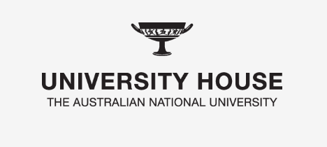
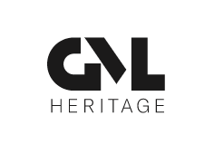
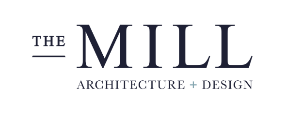
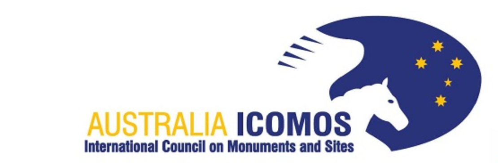
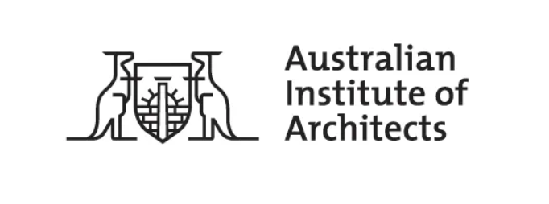

University House
University House hosted Canberra Modern 2017 in its fantastic mid-century setting. Special thanks to the Master of the
House, Peter Kanowski, Operations Manager, Matt Dowdney and UH Events Team for their assistance with the events.

GML Heritage
For over twenty-five years GML has been at the forefront of heritage consulting. With offices in Sydney and Canberra
and
a team of over forty industry leaders and experienced professionals.
Award-winning services include Aboriginal heritage, archaeology, the built environment, cultural landscapes, public
history, community engagement and interpretation.
Design Institute of Australia
The Design Institute's vision is to raise awareness and increase the profile of the design profession within the
community. They want to establish the ACT as an epicentre of design innovation and creativity - where the contribution
of leading ACT designers is recognised.

The Mill Architecture and Design
The Mill Architecture and Design is a Canberra based full service design firm specialising in single and multi-unit
residential, commercial office, retail fit outs and government space planning with a specialised approach of passive,
sustainable design.
They focus on transparent client relationships, long-term sustainability, and cost-effective service to provide
clients
with designs that are fully considered from all angles, and are the most efficient, economical and pleasing resolution
for a design.

Australia ICOMOS
The International Council on Monuments and Sites (ICOMOS) is an association of heritage practitioners throughout the
world, dedicated to the conservation of the world’s cultural heritage.

The Australian Insititute of Architects
The Australian Institute of Architects is the peak body for the architectural profession in Australia, representing
11,000 members. The Institute works to improve our built environment by promoting quality, responsible, sustainable
design. Through its members, the Institute plays a major role in shaping Australia's future